犬高血鈣：以病例為基礎的診斷與處置
主講：Daniel K. Langlois, DVM, DACVIM｜密西根州立大學（MSU）獸醫學院內科教授
2026 年 10 月 9 日｜VET-KU × Texas A&M 內科研討會｜場次 21
🎧 課堂錄音與逐字稿（Plaud）↗
資料來源標記：
投影片（頁碼＝講義投影片編號 1–47）
🎤 課堂逐字稿
📸 現場 課堂現場投影片（講義 PDF 沒有）
✍️ 筆記 上課時記下的重點與提問
💡 補充 整理者補充（機轉、判讀、交叉參照）
【更正】 逐字稿轉文字錯誤，以講義為準（完整列表見最後一節）
⭐ 必記原則
- 狗的高血鈣永遠不能忽略：狗沒有「特發性高血鈣」，那是貓的診斷
- 總鈣不能準確預測 iCa，校正公式不可靠；但 tCa > 13.5 mg/dL 時 iCa 幾乎一定高，不必等結果再開始找病因
- 一定要看磷：磷低或正常偏低 → PTH 依賴（PTH 或 PTHrP）；磷正常偏高或高 → 非 PTH 依賴
- 輕度氮血症不會造成高血鈣，輕度高血鈣也不會造成氮血症
- 重度高血鈣幾乎只有三種：惡性腫瘤、原發性副甲亢、維生素 D 中毒
- 高血鈣常常是疾病的標記，不是病因；輕度時多半只有 PU/PD 或結石
- 高血鈣一定要直腸觸診，MSU 每年都有幾例是驗完血才摸到肛門囊腫塊
- 判讀 PTH 要問「適當還是不適當」：iCa 高時，PTH 落在參考區間上 1/3 就是不適當
- PTHrP 敏感度差、特異度高：陰性不能排除腫瘤，陽性強烈指向腫瘤
- 淋巴瘤是高血鈣最常見的原因
- 確診前絕對不要給類固醇：一劑就可能讓淋巴瘤緩解，效果可持續數天到數週
- 脫水或氮血症的動物不要用 furosemide；治療前先採好 iCa、PTH、PTHrP、25-OH-D 的檢體
場次資訊與大綱
▾🎤 講者與大綱
- 講者 Daniel K. Langlois，DVM、DACVIM，MSU 獸醫學院內科教授。部分病例資料由 MSU 內分泌實驗室的 Dr. Jean Brudvig 提供。
- 🎤 鈣的內容太多（狗和貓、高和低），所以這一小時只講狗的高血鈣，最後加碼一個低血鈣病例。
- 🎤 開場閒聊：密西根的休倫湖（Lake Huron）看起來像海邊，但一踩進水就知道是密西根，不是泰國。小孩喜歡在湖邊找 Petoskey stone（化石珊瑚），是五大湖區的「聖杯級」石頭。
| # | 大綱 |
|---|---|
| 1 | 鈣磷恆定：相關荷爾蒙 |
| 2 | 高血鈣的臨床後果 |
| 3 | 診斷思路 |
| 4 | 惡性腫瘤與維生素 D 檢驗套組 |
| 5 | 治療原則 |
1. 病例 Jet 與血鈣的三種型態
▾🎤 Jet，12 歲公（已結紮）傑克羅素㹴
- 🎤 飼主是 MSU 的馬外科醫師，帶狗來內科評估 PU/PD：幾個月前開始，慢慢變嚴重。
- USG 1.006–1.011（低張到等張尿）。除了輕度 PU/PD，狗精神非常好，飼主沒有其他擔心。
- 🎤 原本的獸醫在之前的檢驗發現輕度高血鈣；到 MSU 時，講者會稱為中度高血鈣。
| 項目 | 結果 | 參考區間 |
|---|---|---|
| BUN / Crea | 17 / 0.8 | 12–27 / 0.6–1.5 mg/dL |
| Ca | 13.9 H | 9.5–10.8 mg/dL |
| P | 2.6 L | 2.7–5.4 mg/dL |
| ALP | 107 H | 10–92 U/L |
| 電解質、蛋白、白蛋白、球蛋白 | 都正常 | |
答案在第 3 節揭曉。
🎤 血鈣的三種型態
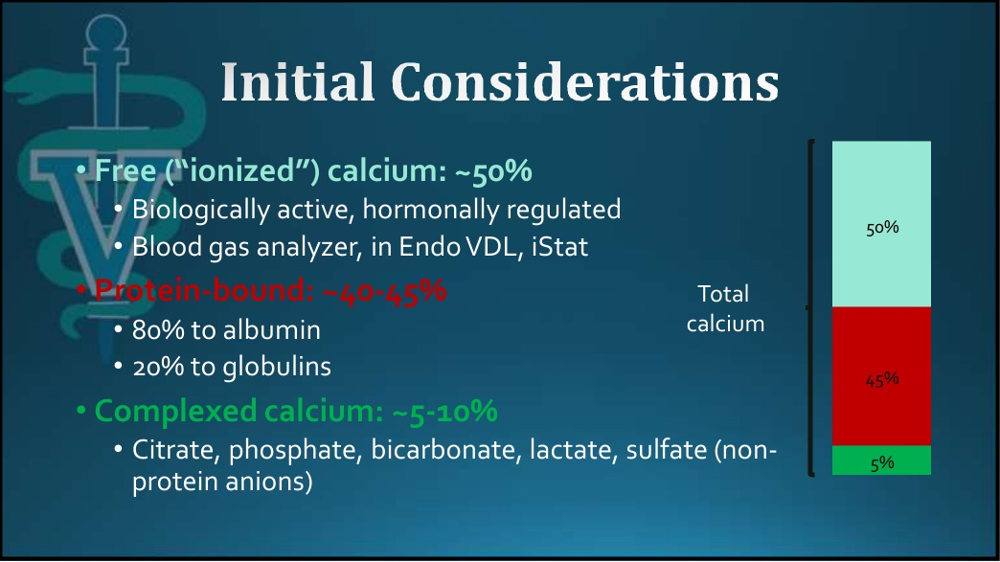
| 型態 | 比例 | 說明 |
|---|---|---|
| 游離（離子）鈣 iCa | 約 45–50% | 唯一有生物活性、受荷爾蒙調控的部分，判斷是不是病理性高血鈣只看它。用血氣分析儀、i-STAT 或送內分泌實驗室測 |
| 蛋白結合鈣 | 約 40–45% | 80% 結合白蛋白、20% 結合球蛋白（α、β 球蛋白等） |
| 複合鈣 | 約 5–10% | 和檸檬酸、磷酸、碳酸氫根、乳酸、硫酸等非蛋白陰離子結合 |
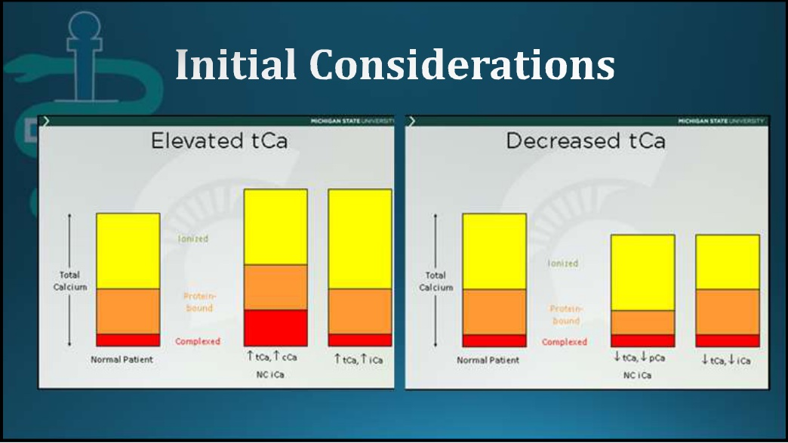
- 🎤 總鈣改變常伴隨 iCa 改變，但也有很多時候不會。每一種疾病可能影響不同的鈣池，所以在診斷走太遠之前，要先測 iCa 確認總鈣的升高。
📸 現場🎤 總鈣不是 iCa 的準確預測指標
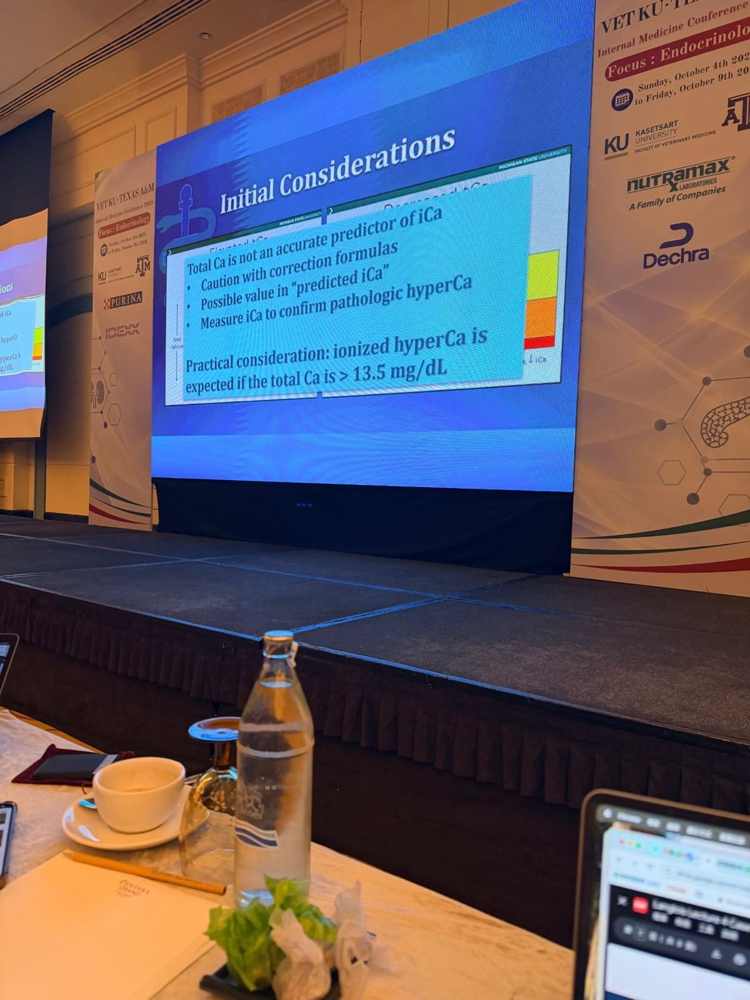
- 總鈣無法準確預測 iCa：使用校正公式要小心；「預測 iCa」可能有參考價值；要確認是病理性高血鈣，請直接測 iCa。
- 🎤 文獻上有很多校正公式，最簡單的是用白蛋白校正，但幾乎每個研究都顯示這些預測公式不準。
- 實務考量：總鈣 > 13.5 mg/dL 時，可以預期 iCa 是升高的。🎤 總鈣 14、15 的病例當然還是要測 iCa，但不需要等結果才開始診斷，可以直接開始找病因。
補充：13.5 是判斷「是不是真的高血鈣」的切點。總鈣介於參考上限到 13.5 之間是灰色地帶，一定要測 iCa。本堂課的 Riley（11.7）、Peggy（12.1）、Penelope（12.5）都落在這個區間，結果三隻的 iCa 各不相同。
2. 鑑別診斷與口訣
▾🎤 鑑別診斷與發生率
鑑別診斷：惡性腫瘤、原發性副甲狀腺亢進、維生素 D 過多、骨溶解、愛迪生氏症、肉芽腫性疾病、腎臟病。🎤 有些由荷爾蒙媒介，有些不是。
| 犬 | 貓 |
|---|---|
| 惡性腫瘤 45–50% | 特發性 45% |
| 原發性副甲狀腺亢進 35–40% | 惡性腫瘤 45% |
| 愛迪生氏症 10% | 原發性副甲狀腺亢進 6% |
| 維生素 D 2% | 其他 4% |
| 其他 4% |
- 🎤 狗的第一名是腫瘤（淋巴瘤、多發性骨髓瘤、肛門囊腺癌，也有其他腫瘤的報告），原發性副甲亢緊追在後，愛迪生第三，維生素 D 中毒第四。比例依研究而有些差異。
- 🎤 不管是哪一種，都是很有意義的疾病。
There is never a valid reason to ignore hypercalcemia in a dog.狗的高血鈣，永遠沒有可以忽略它的理由。任何真正的病理性高血鈣都值得完整的診斷檢查。
📸 現場🎤 高血鈣的記憶口訣
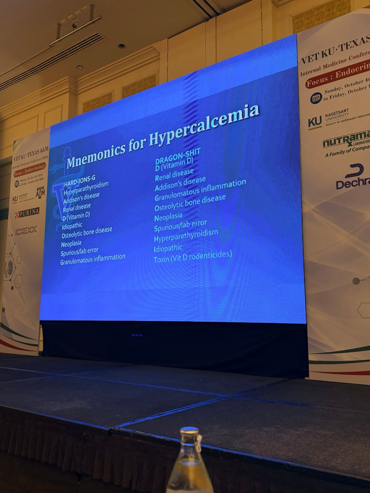
HARD-IONS-G
- Hyperparathyroidism 副甲狀腺亢進
- Addison's disease 愛迪生氏症
- Renal disease 腎臟病
- D（Vitamin D）維生素 D 過多
- Idiopathic 特發性
- Osteolytic bone disease 溶骨性骨病
- Neoplasia 腫瘤
- Spurious / lab error 假性升高／檢驗誤差
- Granulomatous inflammation 肉芽腫性發炎
DRAGON-SHIT
- D（Vitamin D）維生素 D 過多
- Renal disease 腎臟病
- Addison's disease 愛迪生氏症
- Granulomatous inflammation 肉芽腫性發炎
- Osteolytic bone disease 溶骨性骨病
- Neoplasia 腫瘤
- Spurious / lab error 假性升高／檢驗誤差
- Hyperparathyroidism 副甲狀腺亢進
- Idiopathic 特發性
- Toxin（Vit D rodenticides）毒物（維生素 D 類殺鼠劑）
- 🎤 講者特別強調：特發性只發生在貓，不是狗。
補充：口訣比講義第 7 張多了假性升高、特發性、毒物三項。假性升高的常見原因有脂血或溶血干擾比色法、一歲以下幼犬生理性偏高、高蛋白血症（總鈣上升但 iCa 正常）。毒物最常見的是膽鈣化醇類殺鼠劑和人用的 calcipotriol 乾癬藥膏。
3. 鈣磷調控：三種荷爾蒙
▾🎤 鈣（與磷）的調控因子
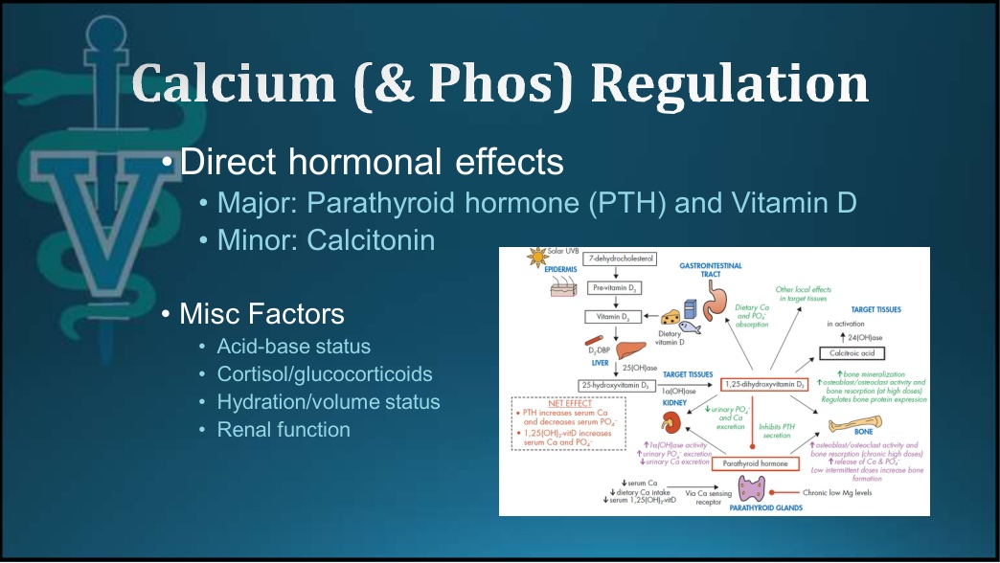
- 直接作用的荷爾蒙：主要是 PTH 和維生素 D；次要是降鈣素（講者認為比較像「允許性」或次要的角色）。
- 其他因子：酸鹼狀態、蛋白結合、皮質醇／糖皮質素、水合與血容量狀態（腎灌流下降會減少鈣的過濾）、腎功能。🎤 任何一項失調都可能打亂血鈣。
🎤 簡化總結：「我是個簡化主義者」
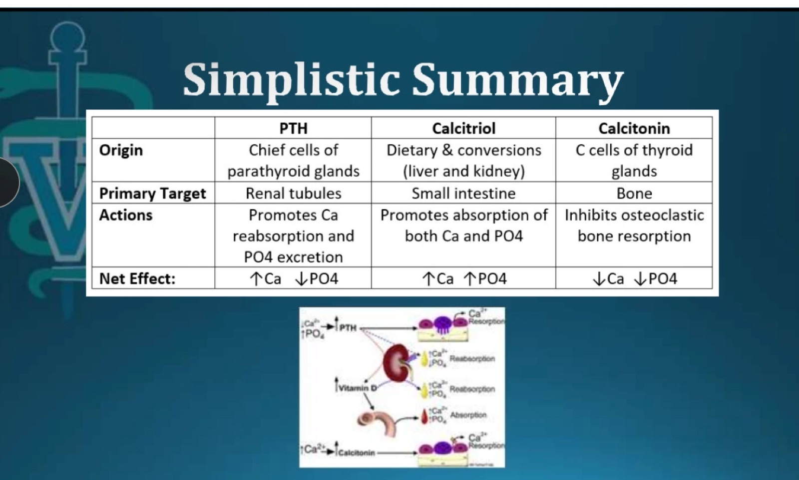
| PTH | 骨化三醇 Calcitriol | 降鈣素 Calcitonin | |
|---|---|---|---|
| 來源 | 副甲狀腺主細胞 | 飲食，經肝、腎轉化 | 甲狀腺 C 細胞 |
| 主要作用器官 | 腎小管 | 小腸 | 骨骼 |
| 作用 | 促進腎臟再吸收鈣、排出磷 | 促進腸道吸收鈣和磷 | 抑制蝕骨細胞骨吸收 |
| 淨效果 | ↑Ca ↓PO₄ | ↑Ca ↑PO₄ | ↓Ca ↓PO₄ |
- 🎤 PTH 作用在遠端腎小管和集尿管。既然淨效果是升鈣降磷，低血鈣和高血磷就是 PTH 分泌的兩大驅動因子。
- 🎤 和人不同，狗貓的維生素 D 大多來自飲食，在肝臟、腎臟經過轉化才變成最強效的形式。
- 🎤 講者會用這張表來看生化：依照生化的變化，哪一種調控因子可能失調了？
🎤 回到 Jet：鈣高、磷低
- 🎤 不用再往下查，就有很好的線索：高血鈣很可能是 PTH 或類 PTH 物質在驅動。
- 🎤 答案：典型的原發性副甲狀腺亢進（run of the mill hyperparathyroidism）。
- ✍️ 筆記 因為鈣高磷低，代表是 PTH 在驅動。
補充：鈣高磷低只代表「PTH 或 PTHrP」在作用，肛門囊腺癌（PTHrP）也是同樣型態，所以還是要直腸觸診和觸診淋巴結。Jet 支持原發性副甲亢的地方：老年犬、精神好、腎指數正常（磷低沒有被腎臟干擾）、沒有其他系統性異常。下一步通常是測 iCa＋PTH、頸部超音波找結節，治療後要監測術後低血鈣。
4. 生化線索與嚴重度
▾🎤 三條生化線索
- 一定要看磷
- 磷低或正常偏低：PTH 依賴性（PTH，或某些腫瘤分泌的 PTHrP）
- 磷正常偏高或升高：非 PTH 依賴性
- 🎤 內分泌永遠有灰色地帶：磷落在參考區間中間時，就沒有好的線索。
- 氮血症（常常是「雞生蛋、蛋生雞」的問題）
- 輕度氮血症不太可能造成高血鈣；輕度高血鈣也不太可能造成氮血症
- 🎤 講者說「腎病常造成高血鈣、高血鈣常造成腎病」是錯誤的觀念。例子：總鈣 17 加上輕度氮血症，氮血症不太可能是高血鈣的原因；總鈣 12.5 加上腎指數爆表，鈣也不太可能是氮血症的原因。
- 高血鈣的程度
- 每一種鑑別診斷都可能造成輕到中度高血鈣
- 愛迪生、腎臟病、肉芽腫性發炎、溶骨性骨病很少造成重度高血鈣
- 重度高血鈣通常是惡性腫瘤、原發性副甲亢或維生素 D 中毒
- 🎤 講者提到德州的團隊可能會遇到黴菌感染（histoplasmosis、blastomycosis）偶爾造成比較中度的高血鈣。
✍️ 提問🎤 輕度、中度、重度怎麼分？
✍️ 我的提問 輕度、中度、重度高血鈣怎麼分？什麼程度開始降鈣治療？（在 10/9 座談會上問的）
🎤 Langlois（總鈣，mg/dL）：< 13.5 輕度、13.5–約 15 中度、> 15 重度。大家定義略有不同。總鈣 13.5 以下通常只有 PU/PD，依疾病而定，他通常不會急著用很多藥。例外是貓的特發性高血鈣，要看有沒有症狀，先試營養；長年用 alendronate 有顎骨壞死、骨折的風險。詳見 24 座談會 Q&A 第 1–2 節。
課堂上（座談會之前）講義和錄音裡零散提到的數字：
| 出處 | 內容 |
|---|---|
| 🎤 Jet | 總鈣 13.9：「我大概會稱為中度」 |
| 🎤 臨床表現 | 進入中到重度、總鈣 > 14 後，開始出現腸胃症狀 |
| 🎤 Janie | 總鈣 14.9：「開始進入中到重度的範圍」 |
| 心血管和神經症狀很少見，除非 Ca > 17.0 mg/dL | |
| 📸 現場 | 總鈣 > 13.5 時可預期 iCa 升高（這是確認高血鈣的切點，不是嚴重度分級） |
補充：Langlois 的分法比部分教科書（輕度到約 13–14、中度約 14–16、重度 > 約 16）低一點，而且 13.5 正好就是「tCa > 13.5 幾乎一定 iCa 升高」那條線。判斷嚴重度時也要一起看 Ca × P、上升速度（急性比慢性危險），以及有沒有臨床症狀或腎傷害。套到本堂病例：Riley、Peggy、Penelope 輕度；Jet、Janie 中度；Storm、Champ 重度。
5. 病例 Penelope：愛迪生
▾🎤 Penelope，5 歲母（已絕育）吉娃娃
- 急診就診：極度沉鬱、低體溫；3 天食慾下降到廢絕，嘔吐 2 天，就診當天虛脫。
- CBC：血液濃縮（PCV 55%）；USG 1.026。🎤 以當時的水合狀態，尿液沒有適當濃縮。
| 項目 | 結果 | 參考區間 |
|---|---|---|
| BUN / Crea | 102 H / 3.7 H | 12–27 / 0.6–1.5 mg/dL |
| Na / K / Na:K | 127 L / 8.6 H / 15 L | 139–151 / 3.9–5.1 / 29–37 |
| Cl / HCO₃ | 95 L / 10 L | 106–115 / 16–27 mmol/L |
| Ca / P | 12.5 H / 14.0 H | 9.5–10.8 / 2.7–5.4 mg/dL |
| TP / ALT | 7.3 H / 80 H | |
| Chol | 88 L | 126–325 mg/dL |
🗳 現場投票：這個高血鈣造成病理變化了嗎？
🎤 很多人選「沒有造成實質的臨床異常」，這是對的。輕度高血鈣不太可能驅動很多病理變化。這隻狗是愛迪生氏症，她病得非常重，但那是愛迪生造成的，不是鈣。
- ✍️ 筆記 addison
補充：低鈉高鉀（Na:K 15）、低膽固醇、血液濃縮、尿液沒有濃縮（鈉流失造成腎髓質濃度梯度流失），都是典型的愛迪生危象。高血鈣的原因包括缺乏皮質醇（腎臟和腸道的鈣吸收增加）、血液濃縮，以及高血磷讓複合鈣增加，所以 iCa 常常只有正常到輕度升高。不需要針對鈣治療，用生理食鹽水和糖皮質素治療愛迪生，鈣通常會自己恢復。和後面 Storm 的區分關鍵就是 Na:K（Storm 是 39）。
6. 高血鈣的傷害與臨床表現
▾🎤 鈣的有害作用
- 腎因性尿崩症：高血鈣干擾 ADH 的正常結合和訊號傳遞
- 腎小管損傷：腎血管收縮 → GFR 下降、腎缺血
- 軟組織礦化：Ca × P > 60–80 時器官功能障礙的風險增加。🎤 講者學生時代被教了很多這個，但其實很有爭議，還有很多其他因素。
- 尿石症（含鈣結石）
- 腸道蠕動改變
- 神經肌肉與心血管異常（少見）
🎤 實務上
- 🎤 輕到中度高血鈣很不可能出現上述大部分變化。很多輕度病例是偶然發現，沒有任何後遺症；有症狀的話，通常只是 PU/PD 或容易長膀胱結石。
- 🎤 其他臨床症狀通常是原發疾病造成的：淋巴瘤合併高血鈣的狗，多半是因為淋巴瘤而生病，不是鈣；愛迪生、腎病也一樣。
- 鈣特異性症狀的典型進展：泌尿 → 腸胃 → 沉鬱 → 虛弱
- 🎤 中到重度、總鈣 > 14 時，可能出現腸胃症狀：嘔吐、食慾下降、下痢或便秘都有可能
- 鈣再更高：沉鬱、虛弱
- 心血管和神經症狀很少見，除非 Ca > 17.0 mg/dL
Hypercalcemia is more of a marker for disease rather than a driver of disease.在很多病例中，高血鈣比較像是疾病的標記，而不是疾病的驅動者。中到重度高血鈣則是例外。
7. 診斷思路與檢驗套組
▾🎤 診斷考量
- 初步理學檢查和常規檢驗常常就有線索
- 仔細觸診淋巴結、直腸觸診
- 用血磷判斷 PTH 依賴或非依賴
- CBC、生化、尿檢可能提供更多證據
- → 找腫瘤：胸腹腔影像，淋巴結、脾臟、肝臟細針抽吸
- → 荷爾蒙評估：測 PTH、PTHrP、25-羥基維生素 D
🎤 「如果一開始沒做直腸觸診，趕快跑回去做，確認沒有肛門囊腺癌。」MSU 每年至少有幾次是血檢結果出來後才摸到肛門囊腫塊，這沒關係，但高血鈣一定要回頭檢查。
✍️ 筆記 anal sac mass（rectal exam）
✍️ 筆記 anal sac mass（rectal exam）
補充：肛門囊腺癌約 25% 會高血鈣，幾乎都是 PTHrP 造成，生化上和原發性副甲亢一樣是鈣高磷低。腫瘤可能不到 1 公分，只有直腸觸診摸得到。肛門囊在 4 點和 8 點鐘方向，兩側都要摸；手指盡量往前伸，摸腰下（髂內、薦骨）淋巴結，這是最常見的轉移位置。
🎤 惡性腫瘤／維生素 D 檢驗套組
- 美國有多家商業實驗室提供，很多最後在 MSU 內分泌實驗室檢驗；也有其他實驗室提供維生素 D 檢驗。
- 檢驗項目：iCa、PTH、PTHrP、25-OH 維生素 D，可以單項送：
- 惡性腫瘤套組：iCa ＋ PTH ＋ PTHrP
- 維生素 D 套組：iCa ＋ PTH ＋ 25-OH 維生素 D
- 🎤 其他國家很多人用人醫實驗室測這些荷爾蒙；MSU 的 PTH 檢測本身就是人用的檢驗（見課後 Q&A）。
- 🎤 MSU 的 PTHrP 檢驗目前暫停，接下來幾個月不提供，希望不久後恢復。
Think "appropriate or inappropriate" rather than "normal or abnormal."不要問數值正不正常，要問以這隻動物當下的生理狀態，這個數值適不適當。
8. 病例 Riley：PTH「適當與否」
▾📸 現場🎤 Riley，11 歲公（已結紮）米克斯
- 主訴：反覆尿結石。4 個月前膀胱切開取出草酸鈣結石，轉診前 2 週又發現結石。
- 其他方面健康，預防保健都有按時做。回顧病歷：長期輕度高血鈣。
| 項目 | 結果 | 參考區間 |
|---|---|---|
| BUN / Crea | 19 / 1.1 | 12–27 / 0.6–1.5 mg/dL |
| Ca / P | 11.7 H / 2.9 | 9.5–10.8 / 2.7–5.4 mg/dL |
| 📸 iCa | 1.53 H | 1.25–1.45 mmol/L |
| 📸 PTH | 8.5 | 1.1–10.6 pmol/L |
- 🎤 「這是我最喜歡的內分泌例子，因為很少有事情完美吻合，到處都是灰色地帶。」
- 🎤 答案：很可能是原發性副甲狀腺亢進。iCa 高應該抑制 PTH 分泌，PTH 卻還在 8.5，對 iCa 升高來說是不適當的。
- 🎤 很多原發性副甲亢的狗，PTH 仍在參考區間內，只是落在最上端。
- ✍️ 筆記 iCa 高、PTH 8.5。
補充：(8.5 − 1.1) ÷ (10.6 − 1.1) ≈ 78%，落在參考區間上 1/3。如果只看有沒有標 H，這份 PTH 會被當成「正常」而排除副甲狀腺疾病。總鈣只有 11.7（< 13.5），iCa 卻是高的，也驗證了灰色地帶一定要測 iCa。輕度高血鈣只表現成反覆草酸鈣結石：PTH 讓血鈣升高，過濾出去的鈣變多，形成高尿鈣。草酸鈣結石（尤其是復發）的狗一定要驗血鈣。
🎤 用 iCa 分類高血鈣
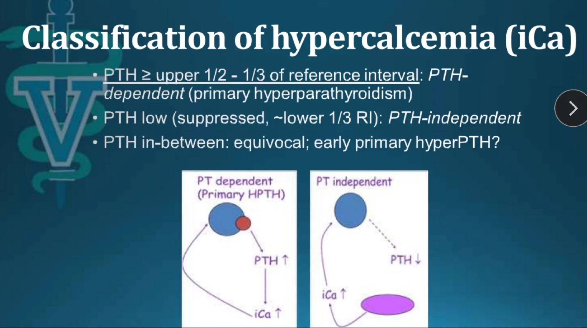
| PTH（在 iCa 升高時） | 分類 |
|---|---|
| ≥ 參考區間上 1/2 到上 1/3 | PTH 依賴性（原發性副甲亢） |
| 低，被抑制（約參考區間下 1/3） | 非 PTH 依賴性 |
| 介於兩者之間 | 不明確；可能是早期原發性副甲亢？🎤 只能隔一段時間再評估 |
補充：以 MSU 參考區間 1.1–10.6 pmol/L 換算，上 1/3 約 ≥ 7.4，上 1/2 約 ≥ 5.9，下 1/3 約 ≤ 4.3。落在中間時可以 2–4 週後重測 iCa 和 PTH，或直接做頸部超音波，同時繼續篩檢腫瘤。有腎病的狗可能同時有腎性次發性副甲亢，這套分類容易失準。
9. 病例 Peggy：腎性次發性副甲亢
▾📸 現場🎤 Peggy，7 歲母（已絕育）馬爾濟斯
- 只是送到內分泌實驗室的檢體，送檢單上的主訴只寫「氮血症？」，其他病史和資料都很少。原本的獸醫送了惡性腫瘤套組和生化。
| 項目 | 結果 | 參考區間 |
|---|---|---|
| BUN / Crea | 82 H / 3.8 H | 12–27 / 0.6–1.5 mg/dL |
| Na / HCO₃ | 152 H / 15 L | |
| Ca / P | 12.1 H / 8.3 H | 9.5–10.8 / 2.7–5.4 mg/dL |
| 📸 PTH | 42.1 H | 1.1–10.6 pmol/L |
| 📸 iCa | 1.35 | 1.25–1.45 mmol/L |
| 📸 PTHrP | 0.0 | 0.0–1.0 pmol/L |
- 🎤 答案：腎性次發性副甲狀腺亢進。PTH 的分泌主要被腎臟因素（高血磷、腎病）驅動。
- 🎤 腎病動物的總鈣幾乎可以是任何數值（低、正常、高都有），但 iCa 很少真的升高。
- 🎤 這不是病理性高血鈣。這隻狗需要的是處理腎病，也許加上治療腎性次發性副甲亢，而不是處理高血鈣。
- ✍️ 筆記 renal secondary hyperparathyroidism，iCa usually not high。
補充：總鈣高、iCa 正常，是因為腎功能下降時磷酸、硫酸、檸檬酸等陰離子累積，和鈣形成複合鈣。PTH 升高是因為磷滯留直接刺激副甲狀腺，加上腎臟製造的骨化三醇減少（骨化三醇原本會抑制 PTH）。這是維持 iCa 的適當代償。和 Riley 對照：Riley 的 PTH「正常」卻是有病的；Peggy 的 PTH 很高，副甲狀腺反而功能正常。少數長期慢性腎病的病例會變成自主分泌，iCa 也升高，稱為三級副甲亢，所以是「usually」not high。
10. 病例 Janie：PTHrP 與惡性高血鈣
▾📸 現場🎤 Janie，5 歲母（已絕育）拳師犬
- 主訴：高血鈣評估。3 個月沉鬱、食慾下降、體重減輕；1 個月 PU/PD。
- 6 週前發現總鈣和 iCa 升高。原本的獸醫做了 CBC、生化、尿檢、胸腹部 X 光、基礎皮質醇，都沒找到原因。
| 項目 | 結果 | 參考區間 |
|---|---|---|
| BUN / Crea | 31 H / 1.4 | 12–27 / 0.6–1.5 mg/dL |
| K / Cl | 3.7 L / 105 L | |
| Ca / P | 14.9 H / 5.2 | 9.5–10.8 / 2.7–5.4 mg/dL |
| ALP / ALT | 248 H / 168 H | 10–92 / 21–68 U/L |
| 📸 PTH | 1.2 | 1.1–10.6 pmol/L |
| 📸 iCa | 1.66 H | 1.25–1.45 mmol/L |
| 📸 PTHrP | 0.0 | 0.0–1.0 pmol/L |
- 🎤 總鈣開始進入中到重度範圍；肝指數輕度上升；中度的離子性高血鈣；PTH 被抑制在參考區間最底部。
- 🎤 現場投票答案 B：雖然 PTHrP 是 0，這隻狗還是很可能是惡性腫瘤造成的高血鈣。
- ✍️ 筆記 即使 PTHrP 不高，這隻還是惡性高血鈣。
補充：磷正常偏高、PTH 被抑制，屬於非 PTH 依賴性。腎指數接近正常、皮質醇正常，排除腎病和愛迪生。拳師犬是淋巴瘤好發品種，加上慢性消耗和肝指數上升，懷疑造血系統腫瘤浸潤肝臟。下一步：腹部超音波（X 光看不到浸潤性病灶）、肝脾和淋巴結細針抽吸，必要時測骨化三醇；也要鑑別黴菌性肉芽腫，它同樣是 PTH 被抑制、PTHrP 陰性。講者沒有公布 Janie 的最終診斷。
🎤 PTHrP（副甲狀腺素相關蛋白）
- 全名 Parathyroid Hormone–related Protein。正常存在於很多組織，但濃度非常非常低，血中很少驗得到；正常生理功能還不清楚。
- 🎤 和 PTH 結構相似，但不完全相同，大約 75–80% 同源。能結合 PTH 受體，產生和 PTH 一樣的生物效果。
- 許多物種「惡性腫瘤體液性高血鈣」（humoral hypercalcemia of malignancy）的經典原因。
🎤 惡性腫瘤相關高血鈣：多種機制
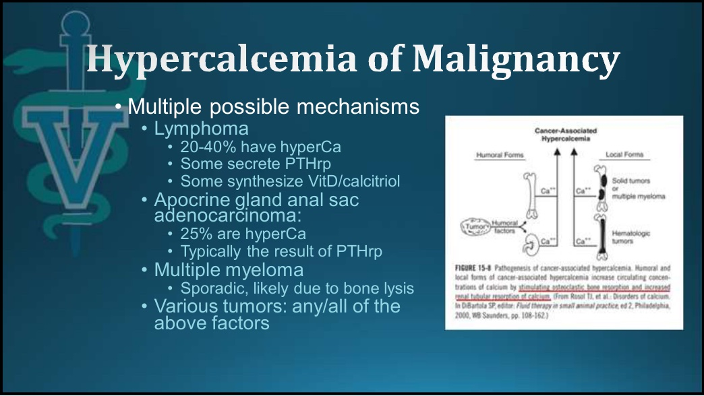
| 腫瘤 | 高血鈣比例 | 機制 |
|---|---|---|
| 淋巴瘤 | 20–40% | 有些分泌 PTHrP；有些自行合成骨化三醇；有些機制不明 |
| 肛門囊頂泌腺腺癌 | 25% | 通常是 PTHrP |
| 多發性骨髓瘤 | 偶發 | 可能是骨溶解 |
| 其他各種腫瘤 | 上述任何一種或多種 |
- 🎤 淋巴瘤可能是美國最常見的高血鈣原因。
📸 現場🎤 PTHrP 的敏感度與特異度
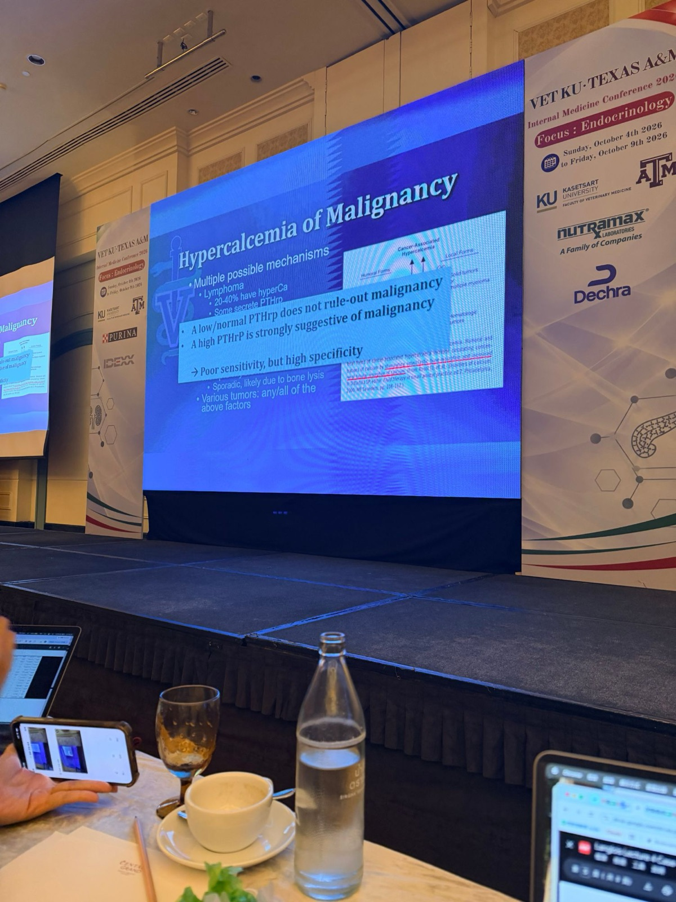
- PTHrP 低或正常，不能排除惡性腫瘤
- PTHrP 升高，強烈暗示惡性腫瘤
- → 敏感度差，但特異度高。🎤 PTHrP 是體液性惡性高血鈣的標記，但惡性高血鈣還有很多其他原因。
補充：可以用 SpPIn／SnNOut 記：特異度高的檢驗，陽性可以確診（PTHrP 陽性 → 全力找腫瘤）；PTHrP 敏感度不高，所以陰性不能排除。檢體沒冷凍或延遲送檢會讓 PTHrP 降解，也會造成偽陰性。
11. 病例 Storm：維生素 D 中毒
▾📸 現場🎤 Storm，6 歲母（已絕育）拉布拉多
- 🎤 急診病例。「我不能告訴你病史，因為會洩漏答案。」
| 項目 | 結果 | 參考區間 |
|---|---|---|
| BUN / Crea | 67 H / 2.1 H | 12–27 / 0.6–1.5 mg/dL |
| Na / Na:K | 155 H / 39 H | 139–151 / 29–37 |
| Ca / P | 17.1 H / 7.1 H | 9.5–10.8 / 2.7–5.4 mg/dL |
| 📸 PTH | < 0.5 L | 1.1–10.6 pmol/L |
| 📸 iCa | 2.3 H | 1.25–1.45 mmol/L |
| 📸 25-OH 維生素 D | 3470 H | 109–423 nmol/L |
- 🎤 不需要病史或荷爾蒙，鈣很高、磷也高的型態，光看生化就排除了所有 PTH 依賴性原因。
- 🎤 腎臟病非常輕微，不是高血鈣的原因，比較可能是反過來。
- 🎤 答案：25-OH-D 明顯升高，這隻狗已知誤食殺鼠劑。殺鼠劑有很多種，其中一些含維生素 D。
- ✍️ 筆記 vitamin D；rule out PTH dependent；renal disease is mild。
補充：Na:K 39 正常，排除愛迪生（對照 Penelope 的 15）。Ca × P ≈ 121，軟組織礦化與急性腎傷害的風險很高。25-OH-D 約是上限的 8 倍，代表來源是膽鈣化醇或麥角鈣化醇（殺鼠劑、補充品、飼料配方錯誤）；calcipotriol 乾癬藥膏或骨化三醇不會讓 25-OH-D 升高。25-OH-D 是脂溶性、半衰期長達數週，所以高血鈣可能持續好幾週，要積極且持久地治療（輸液 → furosemide → 類固醇 → 雙磷酸鹽），並長期監測。
🎤 維生素 D 檢驗：測的是哪一種？
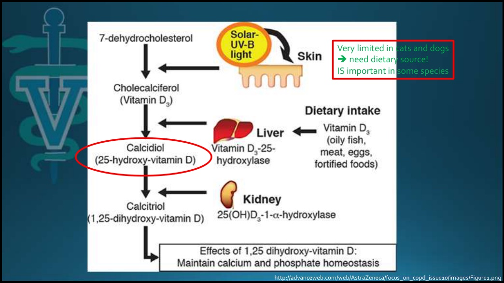
- 維生素 D 是前驅荷爾蒙，要經過兩步活化。例外：部分淋巴球、巨噬細胞／組織球可以自己製造骨化三醇（肉芽腫和淋巴瘤升鈣的機制之一）。
- D3＝膽鈣化醇（動物來源）；D2＝麥角鈣化醇（植物來源）。
- 骨化二醇 Calcidiol＝25-羥基維生素 D，25(OH)D；骨化三醇 Calcitriol＝1,25-二羥基維生素 D，1,25(OH)₂D，是天然維生素 D 代謝物中活性最強的。
- 🎤 可以測骨化三醇，但多半測的是 25-OH-D，也就是 1α-羥化酶作用之前、在肝臟的儲存形式。
- 🎤 25-OH-D 是攝取量的好指標：中毒、飲食相關問題都能反映，但不一定反映下游的狀況。對殺鼠劑或飲食配方錯誤造成的維生素 D 過量，它非常好用。
12. 治療原則與藥物
▾🎤 初步處置回顧
- 發現總鈣升高：狗的高血鈣不會是「特發性」。臨界值時 1–2 週後重驗總鈣；測 iCa 確認是病理性高血鈣
- 理學檢查和常規檢驗常常就指向診斷（淋巴結、直腸觸診）
- 測 PTH、PTHrP，必要時加測維生素 D；通常先驗 PTH ± PTHrP
- 找潛藏的腫瘤
🎤 很多病例光靠病史、理學檢查和生化，就能對發生什麼事有很好的概念。
🎤 治療考量
- 治療原發疾病最有效
- 很多高血鈣病例不需要針對鈣治療。先問三個問題：
- 高血鈣是中到重度嗎？
- 高血鈣造成臨床症狀了嗎？
- 這些症狀或變化有潛在的病理意義嗎？
- 治療不應該妨礙診斷
- 治療不能比疾病本身更糟！
🎤 治療藥物（BSAVA 第 4 版第 21 章 p.226）
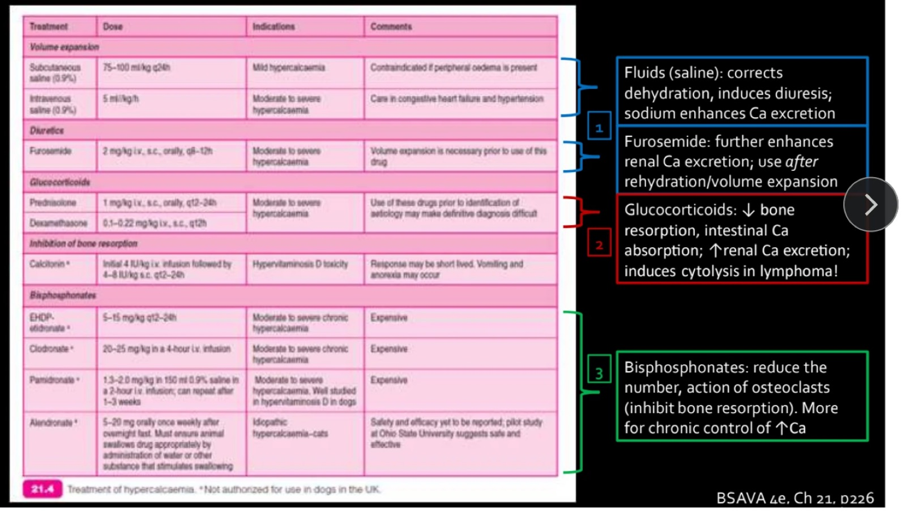
| 類別 | 藥物 | 劑量 | 適應症 | 備註 |
|---|---|---|---|---|
| ① 擴充血容量 | 皮下 0.9% 生理食鹽水 | 75–100 mL/kg q24h | 輕度 | 有周邊水腫時禁用 |
| 靜脈 0.9% 生理食鹽水 | 5 mL/kg/h | 中到重度 | 鬱血性心衰竭、高血壓要小心 | |
| ① 利尿劑 | Furosemide | 2 mg/kg IV、SC、PO q8–12h | 中到重度 | 使用前必須先擴充血容量 |
| ② 糖皮質素 | Prednisolone | 1 mg/kg IV、SC、PO q12–24h | 中到重度 | 在找到病因前使用，可能讓確診變困難 |
| Dexamethasone | 0.1–0.22 mg/kg IV、SC q12h | |||
| 抑制骨吸收 | Calcitonin＊ | 先 4 IU/kg IV 輸注，再 4–8 IU/kg SC q12–24h | 維生素 D 中毒 | 效果可能很短暫；可能嘔吐、厭食 |
| ③ 雙磷酸鹽 | Etidronate（EHDP）＊ | 5–15 mg/kg q12–24h | 中到重度慢性 | 昂貴 |
| Clodronate＊ | 20–25 mg/kg，4 小時 IV 輸注 | 中到重度慢性 | 昂貴 | |
| Pamidronate＊ | 1.3–2.0 mg/kg 加入 150 mL 生理食鹽水，2 小時 IV 輸注；1–3 週後可重複 | 中到重度；犬維生素 D 中毒研究完整 | 昂貴 | |
| Alendronate＊ | 5–20 mg PO 每週一次，禁食一夜後給藥，確保吞下 | 貓特發性高血鈣 | 安全性與療效尚待報告；Ohio State 初步研究顯示安全有效 |
- 生理食鹽水：矯正脫水、促進利尿，鈉本身也增加鈣排出。🎤 院內急性處置時，較高速率的 0.9% 生理食鹽水通常是首選。
- Furosemide：進一步增加腎臟排鈣，必須在補水、擴充血容量之後才用。
- 糖皮質素：減少骨吸收和腸道吸收、增加腎臟排鈣，會讓淋巴瘤細胞溶解！🎤 沒先確診就用，可能讓疾病惡化或被掩蓋。
- 雙磷酸鹽：減少蝕骨細胞數量和活性，比較適合長期控制。🎤 MSU 目前最常用兩種：alendronate（口服錠劑，每週給一兩次）、急性時用 zoledronate。
補充：表中沒有 zoledronate，它是作用更強的新一代雙磷酸鹽，輸注時間短。雙磷酸鹽有腎毒性，氮血症病患要先補足水分並監測腎指數。兩類惡性高血鈣（體液型、局部型）的共同終點都是蝕骨細胞骨吸收，所以雙磷酸鹽有效，但它只控制鈣，不治療腫瘤。
🎤 各疾病的臨床考量
- 原發性副甲亢：有些內科治療比疾病還糟；alendronate 效果不一。→ 副甲狀腺切除，還是「和後果共存」？
- 🎤 治療就是移除副甲狀腺腫瘤。讓原發性副甲亢的狗在家打皮下輸液或吃 prednisone，PU/PD 不會改善。
- 愛迪生和肉芽腫性疾病：很少需要治療高血鈣本身。
- 需要內科降鈣的病例：中到重度高血鈣，最常見於維生素 D 中毒或惡性腫瘤，偶爾是原發性副甲亢。🎤 MSU 的經驗：真正需要針對降鈣的，通常是維生素 D 中毒、非常嚴重的副甲亢、部分惡性腫瘤。
13. 病例 Champ：一個病例講完所有鈣
▾🎤 Champ，4 歲公（已結紮）拉布拉多貴賓
- 🎤 約三年前的病例。「美國現在到處都是 doodle。」
- 主訴：高血鈣加腎衰竭；1–2 週進行性沉鬱、食慾下降、嘔吐。
- 原本獸醫的檢驗：氮血症（BUN 60、Crea 3.3）、Ca 18.5 mg/dL（沒有驗磷）、等張尿。
- 住院一晚打點滴和抗生素（怕是腎臟感染），穩定後轉到州內的私人專科醫院。
- 飼主拒絕所有檢查和治療建議，帶狗回家。🎤 她很生氣，覺得醫院只是想騙錢。
🎤 其他病史：飼主是人醫內科醫師
- 不滿意診斷建議，決定「自己治療她的狗」，開始：
- 0.9% 生理食鹽水 2 L 皮下，1 天
- Furosemide 100 mg PO 每天一次，2–3 天
- Prednisone 100 mg PO 每天一次，2–3 天
- 🎤 講者推測藥是她自己弄來的，在美國這是非常違法的。
- 🎤 飼主說第一天狗好一點，第二、三天又變差，之後轉到 MSU 急重症科（ECCM）。
- ✍️ 筆記 主人自己治療，一開始有比較好，後來狀況不好。
📸 現場🎤 MSU 第一天
- 理學檢查：除了嚴重脫水，沒有明顯異常。
- CBC、生化、尿檢、尿液培養；胸腔 X 光正常、腹部超音波正常；送惡性腫瘤套組。
- 治療：靜脈輸液、止吐（ondansetron、Cerenia）等支持療法。
| 項目 | 結果 | 參考區間 |
|---|---|---|
| BUN / Crea | 134 H / 4.7 H | 比轉診前更差 |
| K / Cl / HCO₃ | 3.4 L / 94 L / 27 | 🎤 符合利尿劑和嘔吐 |
| Ca | 12.4 H | 從 18.5 降下來 |
| ALT / AST | 80 H / 43 H | 輕度上升 |
| 📸 PTH | 12.4 H | 1.1–10.6 pmol/L |
| 📸 iCa | 1.39（正常） | 1.25–1.45 mmol/L |
| 📸 PTHrP | 0.0 | 0.0–1.0 pmol/L |
🎤 住院經過
| 時間點 | tCa | BUN / Crea | 經過 |
|---|---|---|---|
| 轉診前 | 18.5 | 60 / 3.3 | 初診 |
| MSU 第一天（📄 41） | 12.4 | 134 / 4.7 | 飼主自行治療後：鈣降、腎臟惡化 |
| 輸液後（📄 42） | 15.3 | 52 / 2.9 | 氮血症改善，但鈣又跳高；Na 156 H |
| Zoledronate 後（📄 44） | 10.8 | 30 / 2.5 | 臨床好很多；CK 348 H |
- 📄 43：繼續輸液與支持療法；加驗傳染病（鉤端螺旋體、芽生菌）和基礎皮質醇，全部正常；重送惡性腫瘤套組（等待中）；針對高血鈣給 Zoledronate 0.1 mg/kg IV 輸注。
- 🎤 給完雙磷酸鹽，狗看起來好很多，鈣也降了，氮血症雖未正常但改善。
- 📄 45：🎤 飼主受不了「所有不必要的檢查」，沒有確診就帶狗回家，說需要時再回診。第二次惡性腫瘤套組 3 天後才出來。
- ✍️ 筆記 治療後鈣更高，後來給降鈣藥（zoledronate，雙磷酸鹽）有好一點。
| 第二次惡性腫瘤套組（出院後回報） | 結果 |
|---|---|
| PTH | 1.2 pmol/L（被抑制） |
| iCa | 1.99 mmol/L（高） |
| PTHrP | 0 |
🎤 這組數值只來自錄音，沒有拍到投影片。
📸 現場🎤 三週後：又變差、又回來
- 🎤 一段時間沒消息，飼主打電話給醫院院長，很生氣狗又生病了、說醫院是一群白痴。出院約三週後回診。
- ✍️ 筆記 但後來出院後又變差又回來。
| 項目 | 結果 | 參考區間 |
|---|---|---|
| BUN / Crea | 43 H / 1.8 H | |
| Ca / P | 15.5 H / 3.2 | 9.5–10.8 / 2.7–5.4 mg/dL |
| ALT / AST | 138 H / 64 H | 21–68 / 16–41 U/L |
| 📸 PTH | 0.8 L | 1.1–10.6 pmol/L |
| 📸 iCa | 1.99 H | 1.25–1.45 mmol/L |
| 📸 PTHrP | 5.6 H | 0.0–1.0 pmol/L |
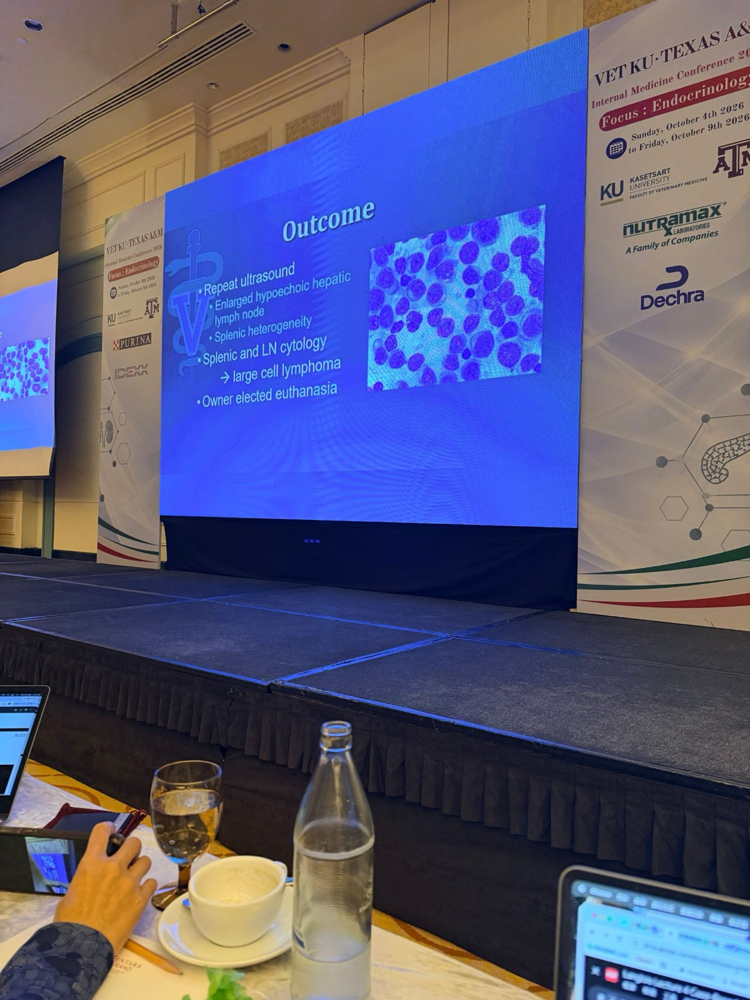
🎤 講者的解讀：三次套組各是什麼狀態？
| 套組 | PTH | iCa | PTHrP | 講者解讀 |
|---|---|---|---|---|
| 第一次（MSU 第一天） | 12.4 ↑ | 1.39 正常 | 0 | 類固醇讓淋巴瘤暫時緩解；當時看到的其實是腎性次發性副甲亢 |
| 第二次（出院後回報） | 1.2 ↓ | 1.99 ↑ | 0 | 腫瘤開始脫離緩解，但 PTHrP 還是低，說明 PTHrP 不敏感、只是特異 |
| 第三次（三週後） | 0.8 ↓ | 1.99 ↑ | 5.6 ↑ | 類固醇和先前的藥物都代謝掉了，一切都被揭露 |
📸 現場🎤 重要教訓
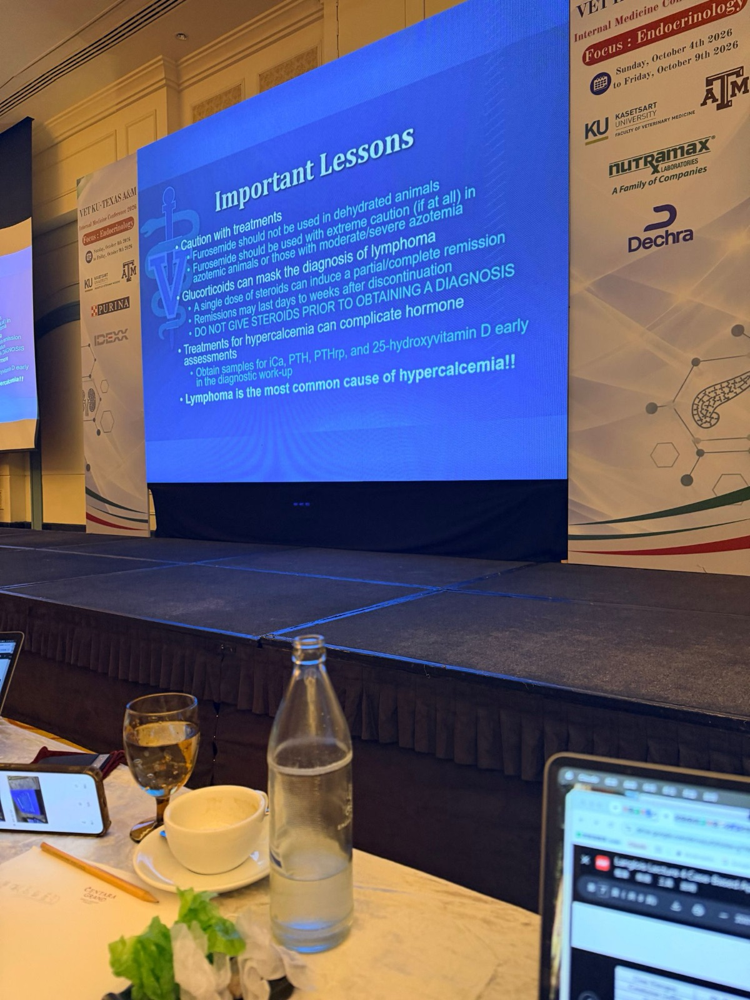
- 治療要小心
- 脫水的動物不應該使用 furosemide
- 有氮血症，或中到重度氮血症的動物，使用 furosemide 要極度小心（最好不要用）
- 🎤 飼主這樣做讓狗變得非常、非常糟。
- 糖皮質素會掩蓋淋巴瘤的診斷
- 🎤 有個誤解是要吃好幾天類固醇才會影響。其實一劑類固醇就可能讓淋巴瘤部分或完全緩解
- 停藥後緩解可能持續數天到數週
- 在取得診斷之前，絕對不要給類固醇
- 高血鈣的治療會干擾荷爾蒙評估：在診斷流程早期就採好 iCa、PTH、PTHrP、25-OH-D 的檢體
- 淋巴瘤是高血鈣最常見的原因！！
補充：飼主只補了一天皮下輸液，卻連給 2–3 天 furosemide，造成脫水惡化（Crea 3.3 → 4.7）、低鉀低氯和濃縮性鹼中毒。停用類固醇後，即使持續輸液，鈣仍從 12.4 反彈到 15.3，代表病因還在。第一次超音波正常，很可能是 prednisone 讓腫瘤縮小。如果第一天就先採檢體、再做淋巴結和脾臟細針抽吸，可能第一週就確診。
14. 加碼病例 Ziggy：低血鈣
▾📸 現場🎤 「有趣」的鈣病例：Ziggy，1.5 歲公約克夏
- 主訴：間歇性發作焦慮、躁動、喘氣，以及明顯的抽搐（tetany）；反覆驗到低血鈣。🎤 來急診時有臉部抽動、肌肉僵直。
- 多次到急診和原本獸醫院處理低血鈣症狀。🎤 每次驗血氣、診斷嚴重低血鈣、輸注葡萄糖酸鈣，飼主就拒絕其他檢查。
- 因為經濟因素，只做了很少的檢查。初次 iCa 3.3 mg/dL（參考值 5.1–5.8）。
- Tums（碳酸鈣）劑量逐漸增加，目前每天 1250 mg。🎤 對一隻小約克夏來說，這是非常大量的口服鈣。
- 推定診斷：原發性副甲狀腺機能低下。
📸 現場🎤 服用碳酸鈣期間的檢驗
| 項目 | 結果 | 參考區間 |
|---|---|---|
| BUN / Crea | 21 / 0.7 | 12–27 / 0.6–1.5 mg/dL |
| Na / K / Cl / HCO₃ | 145 / 4.0 / 113 / 22 | 都正常 |
| Ca | 9.0 L | 9.5–10.8 mg/dL |
| P | 3.8 | 2.7–5.4 mg/dL |
| Mg | 1.9 | 1.7–2.3 mg/dL |
| TP / Alb | 6.0 / 3.0 | 都正常 |
| 荷爾蒙（iCa 正常偏低時） | 結果 | 參考區間 |
|---|---|---|
| iCa | 1.28 | 1.25–1.45 mmol/L |
| PTH | 13.30 H | 1.10–10.60 pmol/L |
| 25-OH 維生素 D | 364 | 112–366 nmol/L |
| 骨化三醇 Calcitriol | 21.0 | 20.0–78.0 pmol/L |
- 🎤 飼主不願意停用碳酸鈣（怕再發作抽搐），所以只能在吃鈣的情況下採檢體。總鈣只有一點點低，但這是在大量補鈣之下。
- 🎤 低血鈣的鑑別診斷：副甲狀腺機能低下、乙二醇（防凍劑）中毒、嚴重腎病、胰臟炎、產後子癇、各種維生素 D 缺乏或佝僂病。
- 🎤 PTH 其實有點高，所以應該不是原發性副甲狀腺機能低下。其實從生化就能看出來：原發性副甲狀腺機能低下應該是低鈣、高磷，這隻狗的磷卻是低或正常偏低。
- 🎤 25-OH-D 代表飲食攝取足夠；PTH 有點高；iCa 正常偏低；但骨化三醇在參考區間最底部。
- 🎤 答案：遺傳性佝僂病，腎臟的 1α-羥化酶功能不正常，無法以適當速率把 25-OH-D 轉成骨化三醇。「你不會看到很多這種病例，但很酷，所以放進來讓大家享受。」
📸 現場 遺傳性佝僂病：VDDR 1A
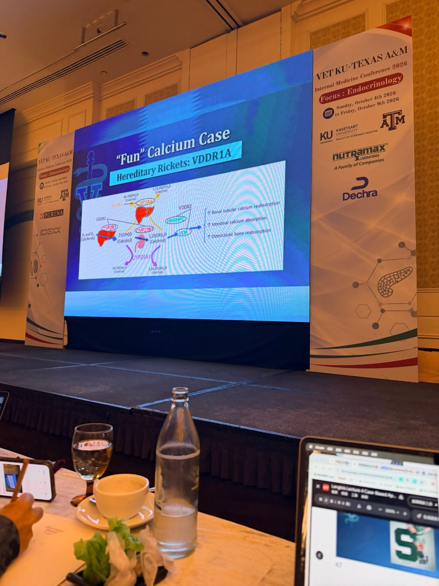
| 步驟 | 酵素／位置 | 對應疾病 |
|---|---|---|
| D2/D3 → 25(OH)D | 肝臟 CYP2R1（25-羥化酶） | VDDR 1B |
| 25(OH)D → 1,25(OH)₂D | 腎臟 CYP27B1（1α-羥化酶） | VDDR 1A ← Ziggy |
| 骨化三醇作用於細胞 | VDR（維生素 D 受體）、HNRNPC | VDDR 2（受體阻抗，骨化三醇反而高） |
| 維生素 D 被過度分解 | 肝臟 CYP3A4 | VDDR 3 |
| 正常去活化 | CYP24A1（24-羥化酶） | — |
骨化三醇的作用（圖右）：↑腎小管鈣再吸收、↑腸道鈣吸收、↑蝕骨細胞骨吸收。
補充：「適當與否」一樣適用於低血鈣。低血鈣時 PTH 應該升高（Ziggy 有）；PTH 高時骨化三醇也應該升高（Ziggy 沒有），所以問題就卡在這兩者之間。治療要補骨化三醇本身（活性型，可以跳過缺陷的那一步），而不是一般的維生素 D；補上後碳酸鈣的需求通常可以大幅減少，要定期監測 iCa 避免變成高血鈣。這個病例也說明推定診斷要驗證：沒驗 PTH 就推定副甲狀腺機能低下，方向是錯的。
座談會補充：遺傳性佝僂病幾乎所有類型在生長期都需要骨化三醇加碳酸鈣，成年後需求通常下降，但多半還需要少量骨化三醇；Tardo 提醒只看血鈣可能漏掉骨折與骨痛。見 24 座談會第 4 節。
15. 課後 Q&A
▾Q1：用乙醇消融（ethanol ablation）治療副甲狀腺腫瘤，成功率如何？
🎤 很長一段時間到現在，多數人（包括 MSU）還是做手術切除副甲狀腺。乙醇消融曾經名聲不好，因為 UC Davis 的團隊做射頻消融（radiofrequency ablation）做得非常好；但現在乙醇消融又回來了，很多地方在做，近期報告的效果和 UC Davis 的射頻消融差不多。MSU 沒做是因為沒有願意做的放射科醫師。如果你的醫院有熟練的放射科醫師，在有經驗的人手上，這是合理的治療選擇。
Q2：Cinacalcet 治療副甲狀腺亢進，有新的看法嗎？
🎤 沒有新的。文獻結果好壞參半，講者看過幾篇摘要。依他的經驗，狗的副甲亢內科治療遠不如人醫那麼可預測：MSU 試過很多東西，結果不一；偶爾有效，但效果也只是中等。Wisconsin 的團隊幾年前研究過，結果很不一致，有些狗數值有變化，但不一定伴隨明顯的臨床改善。簡短答案：「沒有新的。」
Q3：獸醫實驗室能驗的荷爾蒙有限，把動物的血送人醫實驗室驗，可行嗎？
🎤 好問題。如果沒有獸醫的檢驗管道，PTH 和 25-OH 維生素 D 很多人醫醫院都有在驗，願意幫忙的話是合理的。做法：除了病患的檢體，同時送 2–3 隻「健康」動物的對照檢體，因為人醫實驗室不會有狗貓的參考區間。這不是在建立參考區間，但至少可以比較，例如在找原發性副甲狀腺亢進或機能低下時。
獸醫用的很多抗體本來就是給人醫實驗室用的，只是經過調整、驗證後用在獸醫。所以很多實驗室的 PTH 或維生素 D 代謝物檢驗可能適用於狗貓，雖然不能保證。
獸醫用的很多抗體本來就是給人醫實驗室用的，只是經過調整、驗證後用在獸醫。所以很多實驗室的 PTH 或維生素 D 代謝物檢驗可能適用於狗貓，雖然不能保證。
補充：Cinacalcet 是擬鈣劑（calcimimetic），作用在副甲狀腺的鈣感受器，讓副甲狀腺「以為」鈣已經夠高而減少分泌 PTH，人醫用於副甲亢。
Take-home、病例總表、更正表與參考資料
▾一句話流程
發現高血鈣 → 測 iCa 確認（tCa > 13.5 可直接開始）→ 看磷（PTH 依賴或非依賴）→ 看嚴重度 → 觸診淋巴結和直腸 → PTH／PTHrP／25-OH-D 用「適當與否」判讀 → 先採檢體、確診前不給類固醇高血鈣多半是疾病的標記；治療原發疾病最有效，治療不能妨礙診斷，也不能比疾病更糟。
病例總表
| 病例 | tCa | P | iCa | PTH | PTHrP | 25-OH-D | 診斷 |
|---|---|---|---|---|---|---|---|
| Jet（JRT） | 13.9 | ↓ | — | — | — | — | 原發性副甲亢 |
| Penelope（吉娃娃） | 12.5 | ↑↑ | — | — | — | — | 愛迪生（Na:K 15） |
| Riley（米克斯） | 11.7 | 正常偏低 | ↑ | 上 1/3（不適當） | — | — | 原發性副甲亢 |
| Peggy（馬爾濟斯） | 12.1 | ↑ | 正常 | ↑↑（適當） | 0 | — | 腎性次發性副甲亢 |
| Janie（拳師犬） | 14.9 | 正常偏高 | ↑ | 被抑制 | 0 | — | 惡性腫瘤（非 PTHrP 機制） |
| Storm（拉布拉多） | 17.1 | ↑ | ↑↑ | 被抑制 | — | ↑↑↑ | 維生素 D 中毒（殺鼠劑） |
| Champ（拉布拉多貴賓） | 18.5 | — | 正常 → ↑ | ↑ → 被抑制 | 0 → 0 → ↑ | — | 大細胞淋巴瘤（被類固醇掩蓋） |
| Ziggy（約克夏） | 低 | 正常 | 正常偏低（補鈣中） | ↑ | — | 正常偏高（骨化三醇最低點） | VDDR 1A 遺傳性佝僂病 |
更正表（逐字稿轉文字錯誤）
| 逐字稿 | 應為 |
|---|---|
| Dr. Langmaa／Dr. Long | Dr. Langlois |
| Dr. Jean Rudnick | Dr. Jean Brudvig（📄 1） |
| lactose, sucrose（複合鈣的陰離子） | lactate, sulfate 等（📄 5） |
| Hard Ion G／Dragon Boot | HARD-IONS-G／DRAGON-SHIT（📸 現場） |
| Jed | Jet |
| hemocompensated | hemoconcentrated（血液濃縮） |
| heteroblastia | histoplasmosis／blastomycosis（推測） |
| lability profile | malignancy profile |
| ETh levels are at 1.2（Janie） | PTH 1.2 |
| PTH is zero（Janie） | PTHrP 0.0 |
| ionizing acidity | ionized calcium |
| highPT PT/PT/PT | high PTHrP |
| There's an anemia（Storm、Champ） | azotemia（氮血症） |
| storms | Storm |
| measuring calcitriol or 25 hydroxy vitamin D | measuring 25-hydroxyvitamin D |
| occult nephritis | occult neoplasia（潛藏的腫瘤） |
| acetylene fillers | saline／isotonic fluids |
| If you put it on bread | pred（prednisone） |
| four-year-old male neutered Labrador | Labradoodle（📄 38） |
| eistosthenuric | isosthenuric |
| Superior thyroid hormone ... Nine. Calcium is actually at one point four | Parathyroid hormone 12.4；ionized calcium 1.39（📸） |
| zoledronic | zoledronate |
| They've had no T cell | large cell lymphoma（📸 Outcome） |
| thioridazine to a dehydrated or asyndemic animal | furosemide to a dehydrated or azotemic animal |
| markers of calcium and phosphorus bone metastases | markers of calcium and phosphorus metabolism |
| Bosutinib was out of its system | 先前用的藥物（類固醇等）已代謝掉（推測） |
| one-year-old male Dorking | Yorkie（投影片寫 1.5 歲） |
| technical events／petnic crisis | tetanic events／tetanic crisis |
| samples in the face of a more severe hypercalcemia（Ziggy） | hypocalcemia |
| we even measured calcium | calcitriol |
| radio catheter | radiofrequency |
| Santa Park | cinacalcet |
| primary hyper or hypothyroidism（Q3） | primary hyper- or hypoparathyroidism |
| Kelsey is complicated | calcium is complicated |
參考資料
Langlois DK. Hypercalcemia in Dogs: Case-based approach to management. VET-KU × Texas A&M IM Conference, 2026-10-09（講義 47 張投影片、「完整記錄」逐字稿 PDF、現場投影片照片）。部分資料由 Dr. Jean Brudvig 提供。
課堂錄音與逐字稿（Plaud）。連結（逐字稿有轉文字錯誤，請對照更正表）
BSAVA Manual of Canine and Feline Endocrinology, 4th ed., Chapter 21, p.226（Table 21.4 高血鈣的治療）。
Rosol TJ, et al. Disorders of calcium. In: DiBartola SP, ed. Fluid Therapy in Small Animal Practice, 2nd ed. WB Saunders, 2000:108–162（Figure 15-8）。